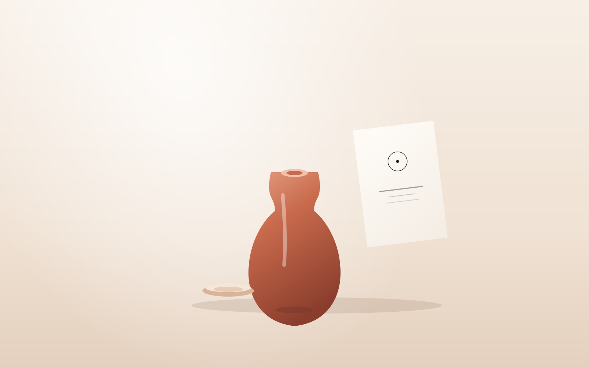
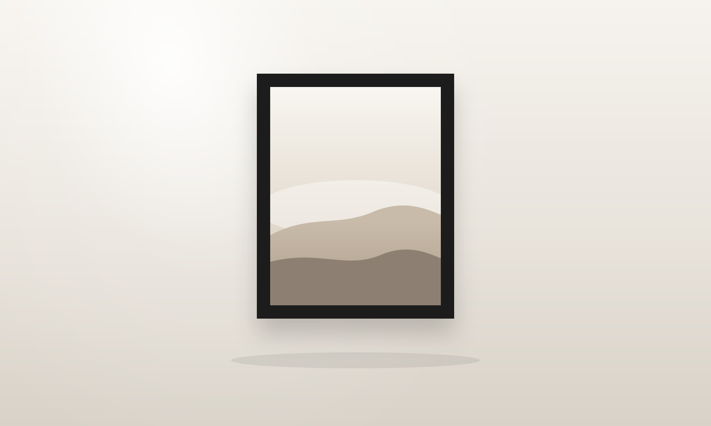
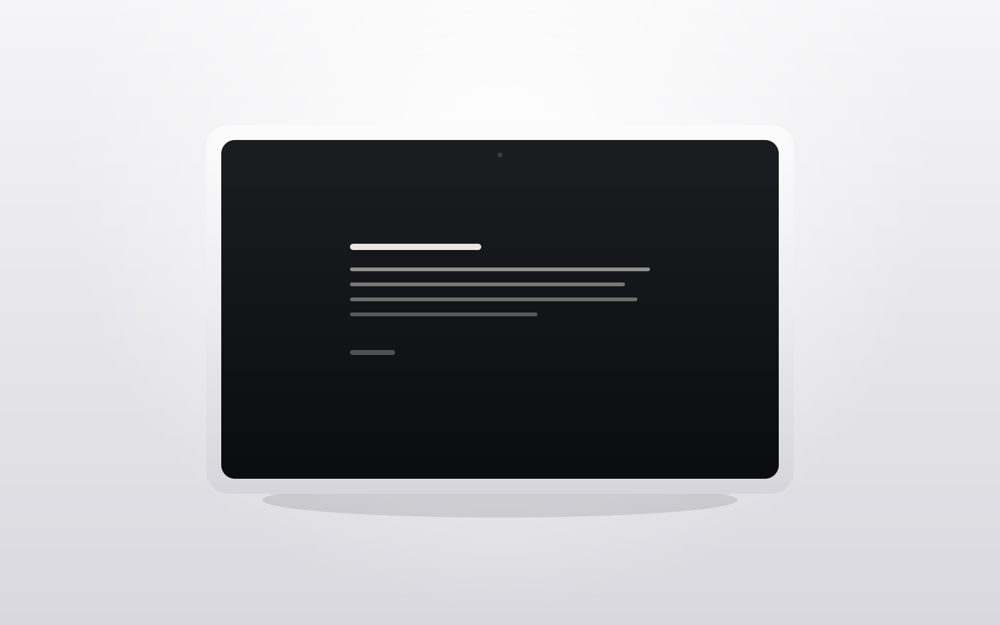
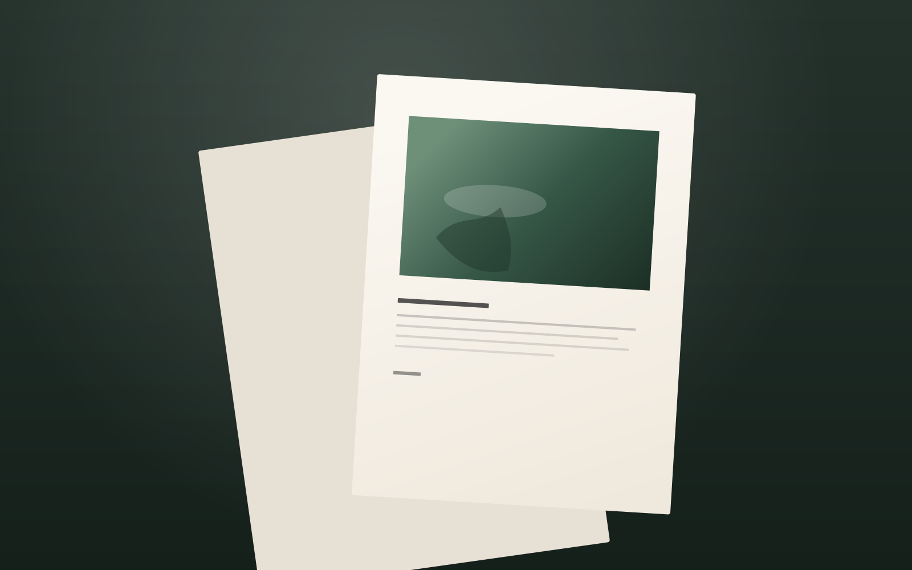

01 Identity
Lumen
A name, a mark, and paper for a ceramics studio that only fires in daylight.

Designer · Bangkok
Designed to be quiet.
Identities, interfaces, and a few pages with nothing extra on them.

About
I like pages that feel like a well-lit room. One idea, one picture, and enough space to actually see them.
I work in Bangkok. These three pieces stand in for the practice: a studio identity, a reading product, and a small-press journal.
Work
01 Identity
A name, a mark, and paper for a ceramics studio that only fires in daylight.

02 Product
A reading surface with one type size and nowhere to get lost.

03 Editorial
A journal for a small press. Wide columns, a deep green, and photographs left large.
